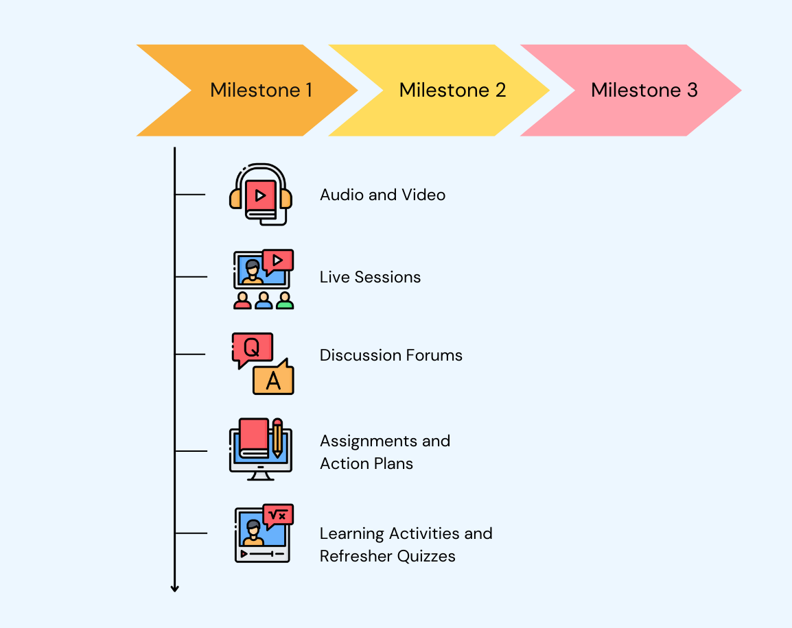
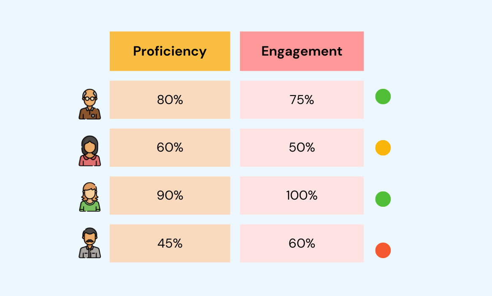
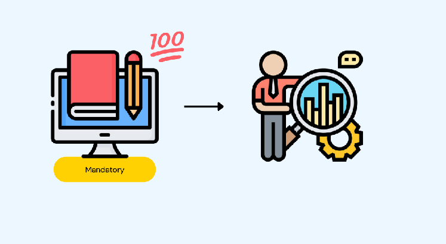
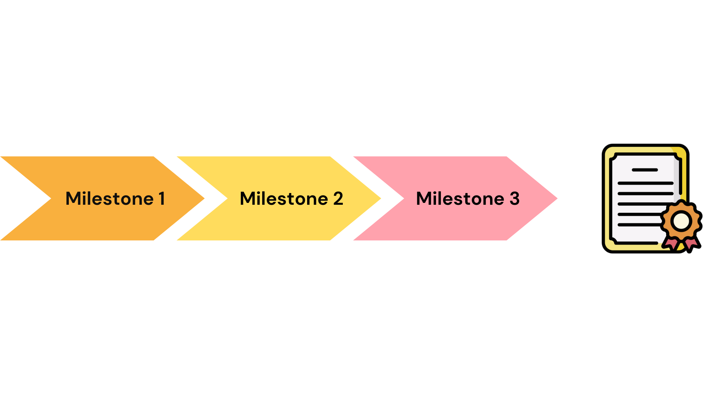

Design gamified and blended learning journeys with LearningWeaver
Powering learning journeys at


When it comes to learning, journeys trump events!
No matter how engaging individual learning events are, when they are spaced, sequenced, and organized over time, they are more impactful and lead to better outcomes.
A powerful learning journey designer
LearningWeaver is a cloud-based application that makes the tedious task of designing, deploying, and managing blended and gamified learning journeys easy.
Design Journeys
Design Blended Learning Journeys
With LearningWeaver, you can divide your learning program into a series of milestones and break down each milestone into a blended learning plan.
Add podcasts, videos, reading resources, live sessions, refresher quizzes, threaded discussion forums, assignments and action plans, reflection journals, and learning activities to create your blended plan.Score & Gamify
Scores and Gamification
Gamify your learning journey with points and scores. Scores are assigned to learning activities to keep learners engaged and make up a leader board.
In addition, certain learning activities can be marked mandatory to ensure completion.Action Plans
Action Plans
Learning designers are constantly asked to prove the effectiveness of learning. With LearningWeaver, your learners can create and manage action plans.
Action plans are short tasks or projects that measure the transfer of learning from the program to the real world. Action plans can be self-evaluated or evaluated by a facilitator.Scores from the Action Plan can be added to the leader board and made mandatory.
Certification
Certification
You can also create certificates that participants can download after achieving a threshold score or completing the mandatory learning activities.
Learner Analytics
Powerful Learning Analytics
Powerful reports help facilitators track learner engagement, identify learners at risk of dropping out, and provide clarity to program sponsors and stakeholders.
With LearningWeaver you can capture both Engagement and Proficiency metrics of your learners.Cloud Infrastructure
Cloud Infrastructure
All these features are backed by secure and highly available cloud infrastructure.
In addition, our infrastructure lets you scale from smaller cohorts to programs with thousands of learners enrolled in cohorts running in parallel.You can integrate by managing your learners directly on the platform or integrating through a SSO (single Sign On) mechanism.
Deployment Stories
Here are some case studies on how LearningWeaver is delivering high impact learning journeys in organizations.

Custom Blended Learning Journeys at Uno Minda
In March 2021, Uno Minda conducted an online assessment centre with over 90 high potential talent in supervisory and first-time manager roles.
Learn More
LearningWeaver Powers The First Time Managers Journey at HDFC Bank
The LearningWeaver platform is powering Trailblaze, an intense 6-weeks learning journey for First Time Managers at HDFC Bank.
Learn More
Learning Blog
Here are some blog posts from the cutting edge research in learning design.

How long and deep should a learning journey be?
You have got hands on a shiny new journey designer like Learningweaver. Now you want to make a journey with multiple learning milestones quickly.
Learn MoreWhat is blended learning?
Learning experience design is a hot topic, and there are always new tools coming up. Work and learning, both are going hybrid. The 3-star standard of learning is to make it efficient, effective and enjoyable (Neelen & Kirschner, 2020).
Learn More
Learner Tested
LearningWeaver is learner tested and is already powering high impact learning journeys in multiple organisations.
We can't wait to work with your learning designers and learners.
Frequently Asked Questions
Where are the learning journeys hosted?
The learning journeys are hosted with AWS backed secure cloud infrastructure. Talk to us if you have specific data location requirements.
Can someone help us in designing these journeys?
Yes, we can appoint a learning designer to support you in design and development at an additional cost.
Can I host multiple cohorts/batches for the same journey?
Yes, you can host multiple cohorts using the admin panel.
What kind of data security and protection is provided?
We use SSL to ensure transferred data is encrypted. All critical user identifiable data is encrypted at rest. Talk to us if you have specific data security requirements
Do you have curated resources that can be plugged in to design learning journeys?
You can buy access to flogames.com library of short games and simulations built to leverage the power of games and the guided discovery method. Our special collaboration provides the simulations for use at a discounted pricing.
How can we access reports?
Reports can be accessed using the admin panel. It provides crucial insights into mastery, competency and engagement of your learners.
Can I enable auto sign-in?
Yes, you can enable auto sign-in through a SSO (Single Sign On) process. Talk to use if you have specific sign-in requirements.
Let’s build a blended learning journey together
Our team is excited to show how you can craft beautiful and blended learning journeys.